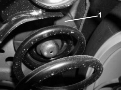
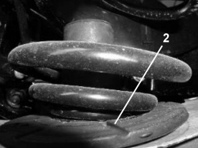

4420AA CHECK ON REAR SUSPENSION SPRING END OF TRAVEL BUFFER
- Path
- Test > 44 SUSPENSION AND WHEELS > 4420 REAR SUSPENSION > 4420A REAR DAMPERS AND SPRINGS > 4420AA CHECK ON REAR SUSPENSION SPRING END OF TRAVEL BUFFER
- Kind
- test / check procedure
- Applies to
- all engines; all production periods
- Interactive page
- https://sloeber94.github.io/elrnDB-fCrm/en/#/194002292
Applies to: all engines; all production periods
Position the vehicle on a two column lift and raise it.
Check the state of the spring upper support (rubber) seal (1): it should not be worn or damaged as indicated in the figure.

Applies to: all engines; all production periods
Check that the lower spring reaction support (2) is fitted correctly as indicated in the figure.

Applies to: all engines; all production periods
Check that the spring is correctly fitted in its housing as indicated in the previous figures.